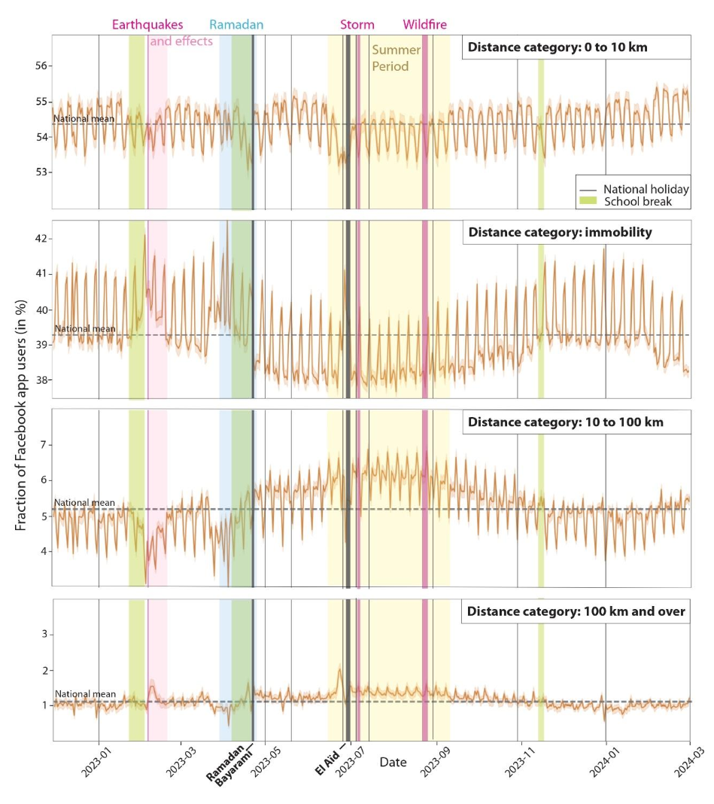

04.1
Temporal patterns
Mobility patterns changed substantially following the earthquake, with distinct temporal responses across affected areas.
The temporal analysis was used to identify changes in mobility before and after the disaster and to examine how these responses evolved through time.

Temporal evolution of population mobility observed in the Meta Movement Data.